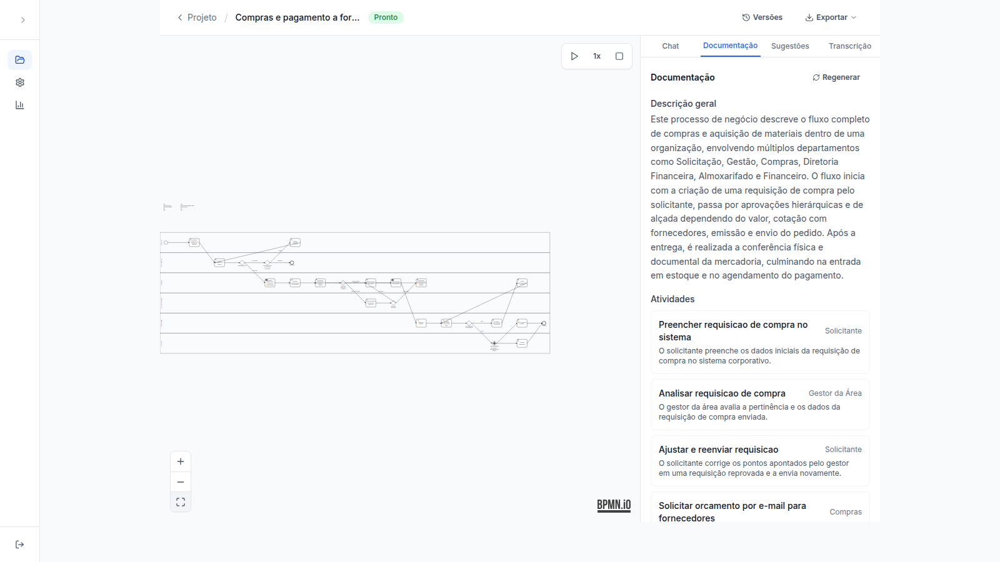
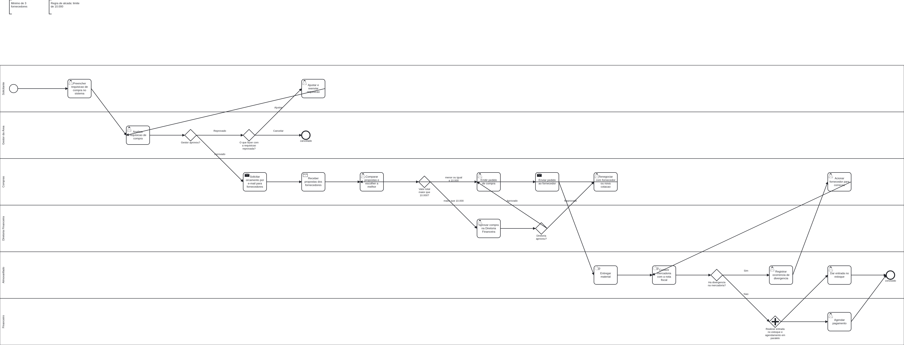

Estudo de caso
Easy Process: da entrevista em áudio ao diagrama BPMN
Ferramenta para analistas de negócio. Você sobe a gravação de uma entrevista com quem executa um processo, a IA transcreve, entende e desenha o diagrama BPMN, e você ajusta conversando em português, sem precisar saber BPMN.

O problema
A modelagem do processo atual (as-is) é uma das fases mais lentas de projetos de melhoria. O analista entrevista as pessoas, transcreve, interpreta e só então desenha o fluxo à mão. Trabalho como analista de negócio, mapeando processos em BPMN, e conheço esse gargalo por dentro.
A proposta é automatizar da gravação até o primeiro diagrama e deixar para o analista a parte que exige julgamento: revisar e refinar. A IA não substitui o analista, produz um rascunho que ele corrige.
O fluxo do usuário
- Sobe ou grava o áudio no navegador (até 25 MB).
- Acompanha o estado do processo: transcrevendo, gerando, pronto. Se der erro, a mensagem real aparece na tela.
- Revisa o diagrama e pede ajustes no chat ("adicione uma aprovação do gerente antes do pagamento").
- Volta a qualquer versão anterior, se o ajuste não ficou bom.
- Exporta o
.bpmn, que abre no Camunda Modeler, ou usa a documentação e as sugestões de gargalo geradas.
Também há modo de apresentação, com a animação de fichas percorrendo o fluxo, para mostrar o processo a quem foi entrevistado.
A decisão central: investigar antes de mexer no prompt
Uma usuária relatou que a IA "nunca cria pools de caixa-preta para atores externos". Em vez de reescrever o prompt no escuro, reaproveitei seis transcrições reais de processos diferentes (e-commerce, delivery, manufatura, marketing) geradas por quem testou a plataforma, rodei de novo sem mudar nenhum código e catalogei o resultado.
| Achado | O que mostrou |
|---|---|
| Tipos de atividade | Funcionando bem nos 6 casos. Não era o gargalo, ao contrário do que o relato sugeria. |
| Pools e raias | Só 1 de 6 usou raias, e nenhum modelou um ator externo como pool. A lista de atores estava correta e o XML ignorava essa informação. |
| Gateways | Os dois casos sem gateway estavam certos (fluxos lineares). Um erro de nuance apareceu no gateway de divisão de um caso. |
O diagnóstico apontou que o modelo já sabia quem eram os atores, e o problema estava na tradução para XML. Daí veio a decisão: separar a análise semântica da modelagem. Um prompt único fazia tudo e errava padrões de gateway, e dois estágios errados em separado são mais fáceis de depurar do que um prompt gigante. O layout do diagrama passou a ser calculado em Python, e não pela IA.
Resultado, e o que custou
Rodei de novo o caso que tinha falhado ("pedido pelo app") com a IA real. O diagrama passou de 0 para 4 participantes (3 pools externos e uma raia interna), e os cinco gateways saíram corretos na primeira tentativa depois de um ajuste de prompt. Também acrescentei uma validação estrutural: se um ator externo não virar pool, o diagrama é reprovado e a IA tenta de novo.
O preço da melhoria: duas chamadas de IA no lugar de uma elevaram o custo por processo de cerca de US$ 0,0009 para US$ 0,0036, quase quatro vezes. Eram centavos, então aceitei e deixei registrado como decisão consciente. O resultado vem de um caso reexecutado, e não de uma amostra grande.
Escolha de modelo com restrição de custo
Os créditos do provedor inicial acabaram em setembro e a exigência passou a ser custo zero. Comparei modelos no plano gratuito do novo provedor, com a mesma tarefa: o modelo menor falhou 3 de 3 gerações de BPMN, e o maior acertou 4 de 4, também de graça. Ficou o maior.
Para não depender de um provedor, a aplicação usa um cliente único compatível com a API da OpenAI e um modelo configurável por etapa. Trocar de provedor é mudar variáveis de ambiente.
Confiabilidade de uma saída que vem de IA
- Toda resposta da IA é JSON validado por schema, e o XML é validado antes de ser salvo.
- Se vier inválido, nova tentativa com o erro no prompt, até 3 vezes. Erros comuns de modelos menores (namespace ausente, símbolo sem escapar) são corrigidos de forma determinística.
- Cada chamada registra tokens e custo estimado, visíveis num painel de "Uso de IA" restrito ao administrador da plataforma.
- Limite de uso por IP (cadastro e login) e por empresa (upload e chat), contra abuso.

Detalhes técnicos: multi-empresa e segurança
Cada empresa vê só os próprios dados. O isolamento tem uma suíte de testes própria, que confere que uma empresa nunca enxerga os dados de outra. A aplicação não sobe sem um segredo de autenticação forte, e o upload valida o conteúdo real do arquivo, não só a extensão. Mais de 200 testes automatizados rodam a cada alteração, com a IA sempre simulada para não gastar cota.
Hipóteses e o que já sei sobre elas
| Hipótese | Como testei | Situação |
|---|---|---|
| Separar a análise da modelagem resolve a ausência de pools para atores externos. | Seis casos reais como linha de base e reexecução do caso que falhou. | Validada em 1 caso. Falta uma amostra maior. |
| O analista aceita um rascunho gerado por IA e o refina, em vez de redesenhar do zero. | Uso do chat de refinamento por usuárias que testaram a plataforma. | Indício qualitativo. Não medi a taxa de aceitação. |
| A ferramenta reduz o tempo de levantamento e modelagem. | Comparar o tempo até o primeiro diagrama revisado com o desenho manual. | Aberta. Ainda sem medição. |
Limites que eu documentei
- Transcrições muito longas (acima de uns 40 minutos) podem passar do limite do plano gratuito.
- A edição manual do diagrama é a próxima etapa do roteiro.
- Ainda não medi quanto tempo a ferramenta economiza em relação ao desenho manual nem a taxa de diagramas aceitos sem ajuste. É a métrica que eu definiria como principal e o próximo passo para provar valor.
O que aprendi
- Um relato de usuária é um sintoma. Reproduzir com casos reais antes de agir mostrou que a causa estava em outro lugar.
- Restrição de custo é critério de produto: ela decide o modelo, o provedor e o que se mede.
- Em produto com IA, o desenho de produto está em como tratar o erro: validar, tentar de novo e mostrar o motivo ao usuário.